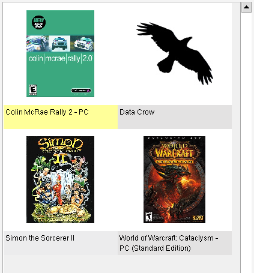

Vista Cartão
Caminho de menu: Ver > Vista Cartão
A vista Cartão é a vista mais elegante disponível no Data Crow e é suportada por todos os módulos.
Esta vista mostra os itens como cartões, com uma imagem e uma breve descrição do item.
A descrição pode ser alterada nas Definições de vista.

O resto é explicado aqui.